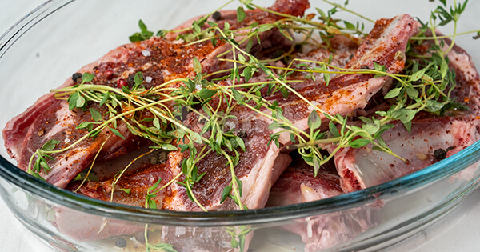
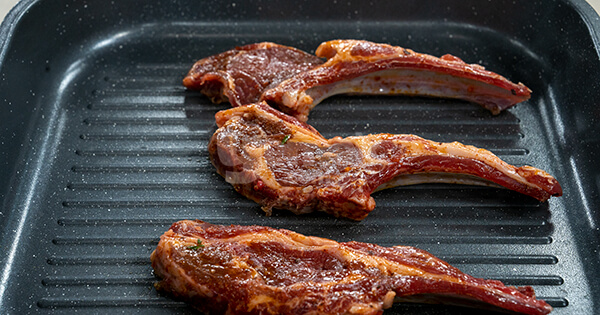
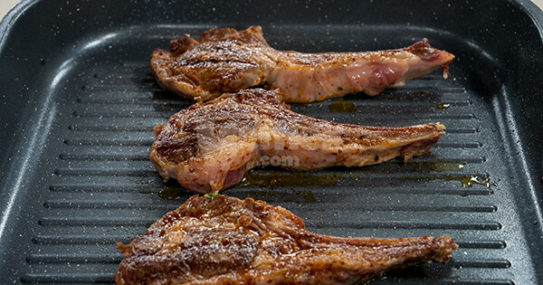
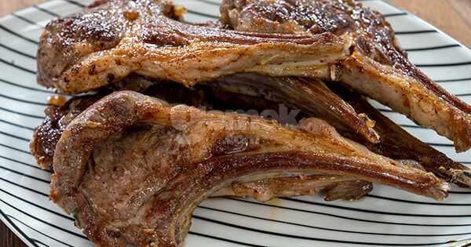
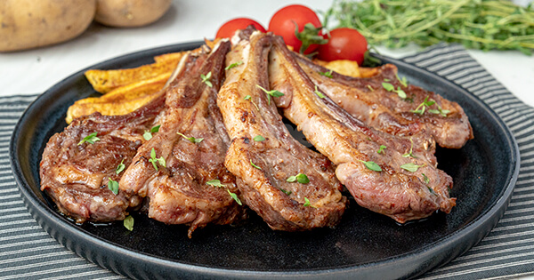

Kuzu Pirzola Tarifi
Kuzu Pirzola Tarifi İçin Malzemeler
- 300 gram kuzu pirzola
- 1/2 çay bardağı zeytinyağı
- 1 çay kaşığı tuz
- 2 çay kaşığı tane karabiber
- 1/2 çay kaşığı pul biber
- 1/2 çay kaşığı toz kırmızı biber
- 5 dal taze kekik
Eksik malzemeleri indirimli tamamlamanın kolayı var
Et, sebze, meyve, baharat ya da ihtiyacın olan ne varsa; hem taptaze, hem sürpriz indirimlerle Yemeksepeti Market ve Yemeksepeti Mahalleile yanında, eksik malzemelerin dakikalar içinde kapında!
Kuzu Pirzola Tarifinin Püf Noktası
Etleri marine etmek için en az 1 saat bekletmelisiniz. Zamanınız varsa 1 gece önceden marinasyonda bekletebilirsiniz
Kuzu Pirzola Nasıl Yapılır?
- Kuzu pirzolayı derin bir kaba alın. Üzerine tüm malzemeleri ekleyip güzelce karıştırın. Marine olması için üzerini streçleyip en az 1 saat buzdolabında bekletin.

- Tavayı ısıtın, kuzu pirzolayı yüksek ateşte mühürleyerek pişirin.

- Her iki yüzü de kızarınca tavadan alın.

- Pişen pirzolaları bir tabağa alın.

- Üzerini taze kekik ile süsleyerek servis edebilirsiniz. Afiyet olsun!
